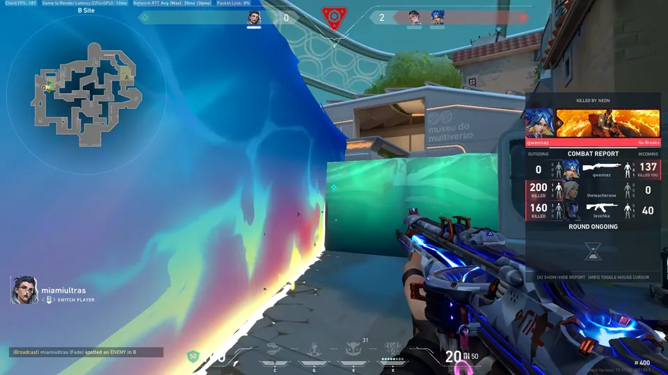

TRIM
Trim and tag
Drag the handles to set the start and end. Step frame by frame or skip 5 seconds. Add tags, mark a favorite, or change the game tag. Trim Original trims the file in place instead of exporting a copy.
REC · BUFFER 2:00 · WINDOWS 10/11
ClipVault runs in the background while you play and keeps a rolling buffer of the last 2 minutes. Press your save hotkey when something happens and you get a normal MP4 file, with game audio and your microphone on separate tracks.
Free and open source (GPL-2.0-or-later). No account. Nothing is uploaded.
CH 01 · HOW IT WORKS
While ClipVault runs, it holds the last 2 minutes of your screen and audio in a rolling buffer. Older footage rolls off as new footage comes in. You can change the length in Settings.
The save hotkey uses a low-level keyboard hook, so it works while a fullscreen game has focus. You pick the key in Settings.
Windows shows a “Clip Saved” notification and the clip appears in the library. The file name has the date and the game in it: 2026-09-28_23-30-00_VALORANT.mp4
CH 02 · THE SHELF
Real clips from the developer's library, labeled with the game and the tag each one has in the app. Pull a tape to play it.

The first three tapes play 5-second gameplay loops; the others show a still frame. Every clip is a normal MP4 in a folder you choose.
CH 03 · THE LIBRARY
The library shows every clip with a thumbnail. Move the mouse over one and it plays in the grid, so you can find the right tape without opening each one.

CH 04 · EDITING BAY
Open a clip, drag the trim handles to the part you want, and export a file small enough to post in Discord.

Trim handles set around the “WON” moment: 0:38.38 to 1:04.18, 25.79 seconds. Playback stays inside the trim.
TRIM
Drag the handles to set the start and end. Step frame by frame or skip 5 seconds. Add tags, mark a favorite, or change the game tag. Trim Original trims the file in place instead of exporting a copy.
2 TRACKS
Game and desktop audio are on one track, your microphone on another. Turn either one off or change its volume before you export.
The GAME and MIC meters above are decoration. In the editor each track has a checkbox and a volume slider.
EXPORT
Pick a size target: up to 10 MB, 50 MB, 100 MB, or keep the original. H.264 is the most compatible. AV1 gives better quality per MB and needs an NVIDIA RTX 40-series or newer GPU. You can also export at 30 or 60 fps and at 720p or 1080p.

AFTER EXPORT
A small window opens with the new file. Drag it anywhere to share it, copy its path, or open its folder.
Export size targets
CH 05 · CAPTURE
By default ClipVault records your whole monitor through DXGI. It does not hook or inject anything into the game, which keeps it anti-cheat friendly.

“Games automatically” records supported games only and follows the active game. “Monitor + automatic games” combines both. Both are experimental. You can also pick one app window by hand.
On an NVIDIA GPU, NVENC keeps CPU use lowest. Without one, x264 encodes on the CPU. “Auto” picks for you. Record in H.264 or AV1 at 30, 60, 120 or 144 fps, with five quality presets from Compact to Maximum.
ClipVault sits in the system tray and can start with Windows. The first time it runs, a setup walks you through the clips folder, capture, audio and hotkey.
CH 06 · THE FULL TAPE
A captioned tour: saving a clip, the library, the editor, audio tracks, export and capture settings.
TAPE INSERT · SIDE A
Yes. ClipVault is free and open source under GPL-2.0-or-later. There is no account and nothing to pay for.
Windows 10 and Windows 11, 64-bit. The installer is ClipVault-Setup-1.7.6.exe.
No. Clips are ordinary MP4 files in a folder you choose. Nothing is uploaded.
Yes. It uses a low-level keyboard hook, so it works while a fullscreen game has focus. The key is F9 by default, changeable in Settings.
The default mode records the monitor through DXGI. It does not hook or inject anything into the game, which is why it is anti-cheat friendly.
Yes. 2 minutes is the default buffer length. You can change it in Settings.
No. With an NVIDIA GPU, ClipVault uses NVENC for the lowest CPU use. Without one, it falls back to x264 on the CPU. For exports, H.264 is the most compatible choice; AV1 needs an NVIDIA RTX 40-series or newer GPU.
They are recorded to separate audio tracks. In the editor you can turn either one off or change its volume before you export.
CH 07 · LOAD TAPE
ClipVault sits in the tray, can start with Windows, and keeps the last 2 minutes ready. Press your hotkey when something happens.